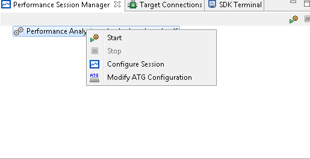

Performance Session Manager view provides the user with capability to control the sessions. User can start and stop a performance session from this view. Each time a session is started a set of trace files are created based on the user configuration.

Whenever an application is debugged or performance analysis is launched the view automatically populates the entry for the active configuration.